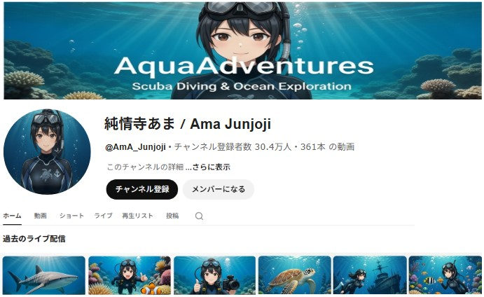

2026.03.04
【New】純情寺あまYouTubeCH登録者30万人を突破！
平素よりRED Ocean Projectを応援いただき誠にありがとうございます。
この度、弊社所属ライバー「純情寺あま」のYouTubeチャンネル登録者数が2026年2月28日をもちまして30万人を突破しました。
これまで多くのご声援をいただきましたこと、心より御礼申し上げます。

「純情寺あま」YouTubeCH登録者30万人突破を記念した特別企画を準備中ですので、皆様楽しみにお待ち下さい！
純情寺あま

ダイビング好きの沈船ハンター。日本中の沈没船を廻りきって、現在は海外の沈没船に興味津々。